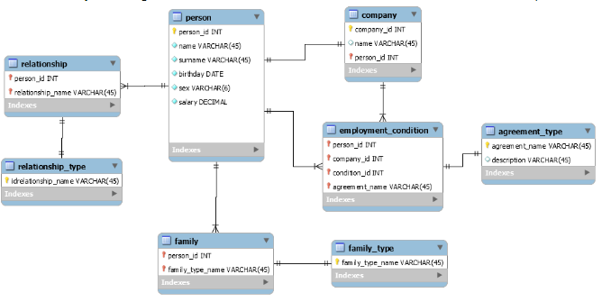

1 Data Modeling
Data modeling은 DB Schema를 설계하는 과정이라 할 수 있다.
1.1 DB schema
- DB 구조(table 종류), 데이터 타입, 그리고 제약 조건에 대한 명세 (Specification)
- 테이블 (table or relation), 필드 (field), 관계 (relationship), 뷰 (view), 인덱스 등 데이터베이스 객체들의 논리적 구조를 설명
- 데이터 베이스 설계 단계에서 명시 되며 자주 변경되지 않음
- 실제 데이터베이스 시스템에서 구현될 수 있는 형태로 정의된다.
- SQL DDL(Data Definition Language)로 표현될 수 있다.
- 테이블 (table or relation) & 필드 (field)
- 예시
- 관계 (relationship)
- 외래 키(Foreign Key)를 통한 관계 표현: 주로 외래 키를 사용하여 테이블 간의 관계를 표현
- 즉, 한 테이블의 컬럼이 다른 테이블의 기본 키를 참조하도록 설정
- 관계 표현 방법
- ONE-TO-ONE (1:1) 관계
- 한 엔티티의 하나의 인스턴스가 다른 엔티티의 하나의 인스턴스와 연관된다.
- 한 테이블에 다른 테이블의 기본 키를 외래 키로 추가하고, 이를 유니크 제약조건으로 설정한다. -
- 예: 한 사람은 하나의 여권을 가진다.
- ONE-TO-MANY (1:N) 관계
- 가장 흔한 관계로, 자식 테이블에 부모 테이블의 기본 키를 외래 키로 추가한다.
- 한 엔티티의 하나의 인스턴스가 다른 엔티티의 여러 인스턴스와 연관된다.
- 예: 한 부서는 여러 직원을 가질 수 있다.
- MANY-TO-MANY (M:N) 관계
- 중간 테이블(연결 테이블)을 생성하여 두 테이블의 관계를 표현한다.
- 한 엔티티의 여러 인스턴스가 다른 엔티티의 여러 인스턴스와 연관된다.
- 예: 학생들은 여러 과목을 수강하고, 각 과목은 여러 학생들에 의해 수강된다.
- ONE-TO-ONE (1:1) 관계
- 관계의 특성
- 선택성(Optionality): 관계가 필수적인지 선택적인지를 나타낸다.
- 기수성(Cardinality): 관계에 참여하는 엔티티 인스턴스의 수를 나타낸다.
- 관계의 역할
- 각 엔티티가 관계에서 어떤 역할을 하는지 설명할 수 있다.
- 예: ‘직원’과 ’부서’ 간의 관계에서 직원은 ‘소속됨’, 부서는 ’고용함’의 역할을 한다.
- 관계 엔티티
- 때로는 관계 자체가 속성을 가질 수 있으며, 이를 관계 엔티티로 모델링한다.
- 주로 다대다 관계를 해결하기 위해 사용됩니다.
- 재귀적 관계
- 한 엔티티가 자기 자신과 관계를 맺는 경우다.
- 예: ‘직원’ 엔티티에서 ‘관리자’와 ’부하직원’ 관계
-- Course 테이블 생성 CREATE TABLE Course ( course_id VARCHAR(10) PRIMARY KEY, course_name VARCHAR(100) NOT NULL, credit_hours INT NOT NULL, department VARCHAR(50) NOT NULL ); -- Student 테이블 생성 CREATE TABLE Student ( student_id VARCHAR(8) PRIMARY KEY, name VARCHAR(100) NOT NULL, date_of_birth DATE, major VARCHAR(50) ); -- Section 테이블 생성 CREATE TABLE Section ( section_id VARCHAR(15) PRIMARY KEY, course_id VARCHAR(10) NOT NULL, semester VARCHAR(10) NOT NULL, year INT NOT NULL, instructor VARCHAR(100), FOREIGN KEY (course_id) REFERENCES Course(course_id) ); -- Grade_Report 테이블 생성 CREATE TABLE Grade_Report ( student_id VARCHAR(8), section_id VARCHAR(15), grade CHAR(2), PRIMARY KEY (student_id, section_id), FOREIGN KEY (student_id) REFERENCES Student(student_id), FOREIGN KEY (section_id) REFERENCES Section(section_id) ); -- 수강 테이블 (학생과 과목의 M:N 관계를 표현) CREATE TABLE Enrollment ( student_id INT, course_id INT, enrollment_date DATE, PRIMARY KEY (student_id, course_id), FOREIGN KEY (student_id) REFERENCES Student(student_id), FOREIGN KEY (course_id) REFERENCES Course(course_id) );
- 테이블 (table or relation) & 필드 (field)
1.2 Data Modeling vs DB Design
- DB schema를 만드는 과정을 Data Modeling 또는 DB design이라고 부름 (늬앙스 차이가있음)
- Data Modeling
- 현실 세계의 데이터를 추상화하여 컴퓨터 세계의 데이터로 표현하는 과정
- 특징 (데이터 거버넌스와 상대적으로 더 밀접한 관련이 있음)
- 주로 개념적, 논리적 수준에서 이루어짐
- 더 추상적이고 개념적인 수준
- 비즈니스 요구사항을 데이터 구조로 변환
- ERD(Entity-Relationship Diagram) 등을 사용하여 시각화
- 결과물: ERD, 개념적/논리적 데이터 모델
- 단계: 프로젝트 초기 단계
- 개념적 모델링: 핵심 엔티티와 관계 식별
- 논리적 모델링: 속성 정의, 정규화 수행
- 목적
- 비즈니스 프로세스와 규칙을 이해하고 표현
- 데이터의 구조와 관계를 명확히 정의
- DB Design
- 데이터 모델을 실제 데이터베이스 구조로 변환하는 과정
- 특징
- 논리적, 물리적 수준에서 이루어짐
- 더 구체적이고 구현에 가까운 수준
- 특정 DBMS와 하드웨어 환경을 고려
- SQL DDL 등을 사용하여 실제 스키마 생성
- 결과물: 데이터베이스 스키마, 테이블 정의, 인덱스 구조 등
- 단계: Data Modeling 이후, 실제 구현 전 단계
- 논리적 설계: 데이터 모델을 DBMS에 독립적인 형태로 변환
- 물리적 설계: 특정 DBMS에 맞는 물리적 구조 설계 (인덱스, 파티션 등)
- 목적
- 효율적인 데이터 저장, 접근, 관리 구조 설계
- 성능, 보안, 확장성 등을 고려한 최적화
- Data Modeling
- 학계에서는 엄격하게 구별지으나 실무나 industry에서는 Data Modeling 이나 DB Design을 혼용해서 씀
- 편의상 이 블로그에선 Data Modeling = DB Design로 설정
1.3 DB Design 단계 (DB Schema Design)
1.4 ERD (Entity-Relationship Diagram)
데이터베이스의 구조를 시각적으로 표현한 다이어그램이다.
Entity(개체), 속성 (Attribute), 관계(Relationship)를 그래픽 요소로 나타낸다.
Entity(개체)
- 현실 세계에서 독립적으로 존재하는 객체나 개념을 나타냄
- 데이터 모델링 단계에서 사용되는 추상적인 개념
- 특징
- 보통 명사로 표현 (예: 학생, 강의, 교수)
- 속성(Attribute)을 가진다
- ERD에서 사각형으로 표현된다.
- 일반적으로 ERD의 엔티티는 데이터베이스 설계 과정에서 테이블로 변환된다.
- 하나의 엔티티는 대부분 하나의 테이블로 매핑된다.
관계(Relationship)
- 엔티티(Entity) 간의 연관성이나 상호작용을 나타내고 Schema의 관계도를
- 두 개 이상의 엔티티 간의 논리적 연결을 표현
- 표현 방식: 일반적으로 선으로 연결되며, 관계의 특성을 나타내는 기호나 레이블이 추가됨
예시

ERD Example - Stack overflow by snowflake
1.5 DB Instance
- 특정 시점에 DB에 실제로 저장되어 있는 데이터로 자주 변동된다.